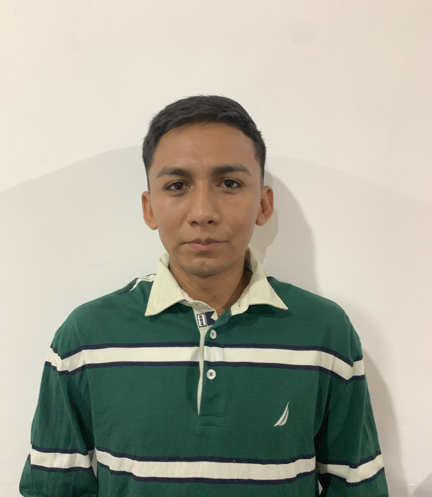

Douglas Jair Alban Campoverde
Informacion personal
Cedula de ciudadania: 0951654037
Tipo de sangre: A+
Contacto
Telefono: 0993123601
Correo electronico: jairalbanc@ug.edu.ec
Red social: jairalban_70
Perfil
Soy un estudiante de la Universidad de Guayaquil, actualmente me encuentro cursando el cuarto semestre de la carrera de ingenieria en Sistema de Informacion, me considero una persona sencilla, amable, respetuosa y puntual. Me gradue de bachillerato tecnico en electricidad en el colegio Tecnico Simon Bolivar, obteniendo muy buenas calificaciones y con promedios muy buenos, mis practicas profesionales las realice en MABE Ecuador, especificamente en el area de control de calidad. Adicionalmente cuento con licencia tipo B, para poder manejar automoviles y camionetas.
Formacion
Educacion basica: Escuela fiscal Matilde Hidalgo de Procel
Bachillerato: Colegio Tecnico Simon Bolivar
Universidad: Actualmente cursando cuarto semestre de Ingenieria en Sistema de Informacion
Certificado: Tecnico certificado en deteccion y sistema de alarma contra incendio
Experiencia
A lo largo de estos años me eh desempeñado en el area de seguridad electronica especificamente en instalacion de camaras de video vigilancia y sistemas de alarma contra robo e incendio. Contando con la experiencia de 5 años de la mano del señor Douglas Alban Mejia con RUC: 0915829949001, el cual se a dedicado a esta profesion toda su vida laboral